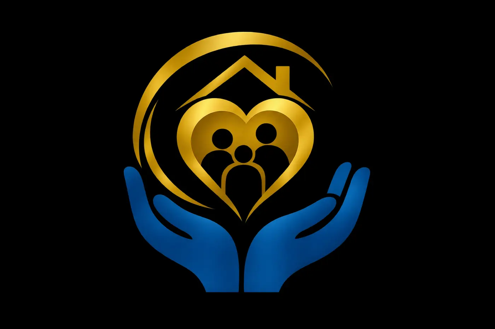

Nos actions locales
Protéger l’enfance. Accompagner nos aînés.
En France, nous souhaitons agir en priorité pour la protection et l’accompagnement des enfants victimes de pédocriminalité et d’abus sexuels, et venir en aide aux personnes âgées confrontées à la précarité, à la dépendance ou à l’isolement.
En savoir plus ›